Edit this page
Open and issue
Export from NeuroWorks
Creating an export template¶
It is a good idea to determine all the headboxes used to collect EEG/iEEG data at your institution. Once known, you will only need to create one template for each headbox.
- In NeuroWorks Database, select (highlight) the study patient you want to export (if a patient has used two different headboxes then you will need to make/use a different template for each one).
- Choose Administration > Export. Alternately, you can right-click and select Export… from the context menu. The Export Studies dialog opens.
-
Before selecting the Export button, ensure that EDF/EDF+ on the open dialog is selected. The list of studies will update to include a Template column.
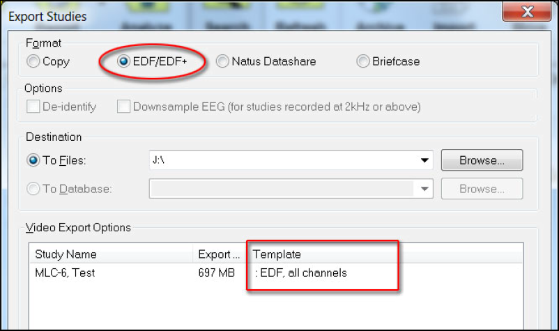 -
Right-click on the displayed information for the study. The context menu displays showing the options available. From the context menu, you can choose one of the following:
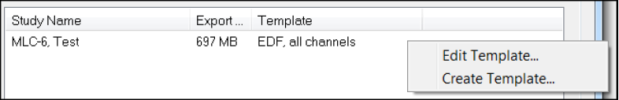 - Edit Template: Edit an existing, selected template
- Create Template: Create a new template based on the headbox type
Note
a new template is not required for each export. You will only need to create one template for every headbox used at your institution. See the sections below on creating and modifying export templates.
-
From the context menu in the Export dialog, select Create Template. The EDF Template Editor dialog displays showing the Channels Tab.
Channels Tab¶
-
Give the template a new name by typing it in the Name box. Ideally create one template for every headbox used at your center. To ensure the templates are not modified or deleted at your center we suggest adding eplink to the template name (i.e. eplink_eeg_128_template or eplink_quantum_template).
-
The Channels tab dialog allows for the selection of the channels that will be exported in the EDF file, as well as the definition of those channels.
- Raw Data (check this box for EpLink): this option exports the study data with no montage associated.
- Acquisition Montage (ignore): this option exports the study data using the patient’s montage.
- Montage (ignore): this option exports the study using a compatible montage based on headbox and study type. This can be chosen from the available dropdown menu.
-
For EpLink select Raw Data.
-
Select the checkbox Add Patient Event Channel to include this channel in the export. You do not need to select Add Trigger Channel.
Options Tab¶
-
Select the Options tab to modify the various options associated with exporting the studies to EDF/EDF+.
-
Select the EDF+ radio button to choose the format of the export.
-
Choose the desired File Extension (.EDF) from the dropdown.
-
Do not check the Deidentify Patient Information checkbox. This information will be removed by the conversion software and the patient name is needed in order to remove any potential traces of it from the EDF file, including any annotations. The conversion software will be run before the EEGs are uploaded to Brain-CODE so EEGs will still be de-identified before leaving the site.
-
When the EDF+ option is selected, the Pad Gaps with Zeros checkbox is enabled. Select this checkbox so gaps in the recording will be filled with zeros. This ensures the EDF+ file is continuous. EDF+ supports gaps (disconnects) in the studies, however this makes analysis more difficult as timepoints will be shifted.
-
Select the checkbox next to Invert AC Channels to invert the polarity of the AC channels when the study is exported.
-
We will not select anything in the File Size Limitations box.
-
Click the Save button on the Channels tab prior to clicking OK in order to save the template. Ensure you remember the name of the template for use later.
-
Once saved, you can close the EDF template Editor dialog.
Note
once you have saved a headbox template, if another patient uses that headbox then the template you created will automatically be selected by NeuroWorks for the subsequent patient.
Saving channel labels¶
-
In NeuroWorks Database, double-click any study for patient you want to export.
-
When the study loads in the viewer, select the first Montage event in the annotations window on the left. This will ensure you are at the point in the recording that the montage was set for the patient.
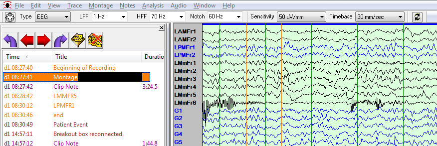
-
Choose Edit > Settings and select the Channel Labels tab.
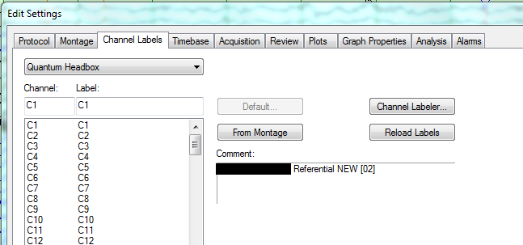
-
Select the From Montage button. This will load the channel labels used for the patient. Select all the labels and save them within a text file called “channel_labels.txt”.
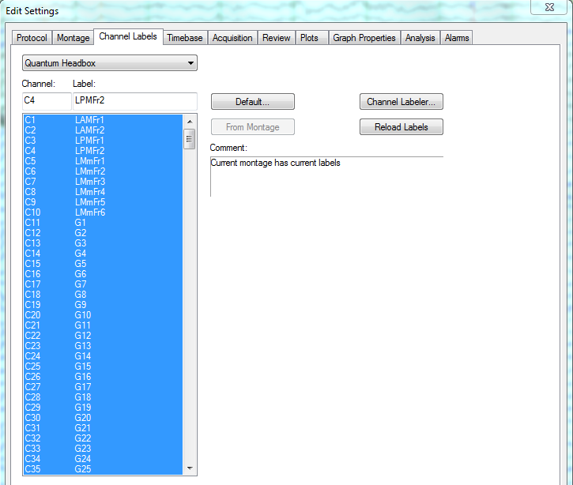
Single EDF export¶
-
In NeuroWorks Database, select (highlight) the study patient you want to export.
-
Choose Administration > Export. Alternately, you can right-click and select Export… from the context menu. The Export Studies dialog opens.
-
Before selecting the Export button, ensure that EDF/EDF+ on the open dialog is selected. The list of studies will update to include a Template column.
-
Confirm the template chosen matches the headbox used for that study. If the template is not correct, click on the template name and select the appropriate headbox template.
-
Once you have confirmed the correct headbox template select Export.
Batch EDF export¶
Before running the NeuroWorks EDF batch export, you will need to locate three items.
-
EDF Export Template: This is the template you saved for the specific headbox.
- Find the installation directory for the NeuroWorks software. The directory name will be Neuroworks and it is usually found at
C:\NeuroworksorD:\Neuroworks. Within this directory select theSettingsdirectory. Finally, find the EDF Export Template you saved previously, it will be the name you chose with the extension .exp. - Ensure you are selecting the correct template for the specific patient. Within the NeuroWorks database, search for the patient and make a note of the headbox that was used for that patient (this is found in a column to the far right of the main window)
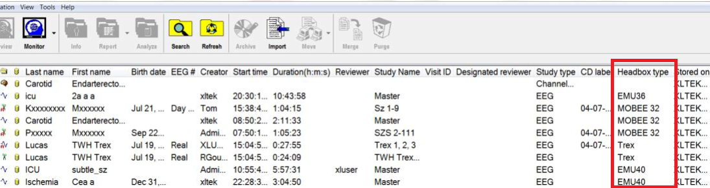
Note
The template file needs to remain in the
Neuroworks\Settingsdirectory. If you attempt to run the conversion with a template path outside this directory it won’t run. - Find the installation directory for the NeuroWorks software. The directory name will be Neuroworks and it is usually found at
-
EDFExport.exe: This is the executable you will use to run the batch export of EDF files.
- This executable will be found within the installation directory for the NeuroWorks software.
- Usually the full path will be located at:
C:\Neuroworks\EDFExport.exeorD:\Neuroworks\EDFExport.exe.
-
Source Patient Data Directory: If you haven’t exported the subjects data from NeuroWorks yet, you can use the NeuroWorks database storage path to find the subject and avoid having to export from NeuroWorks first.
- NeuroWorks stores the raw data for every patient on a Network drive (see figure below). Most often the drive will be
Z:\. You will need to determine where this location is on your system. Right click on the Windows Start Menu and select File Explorer.
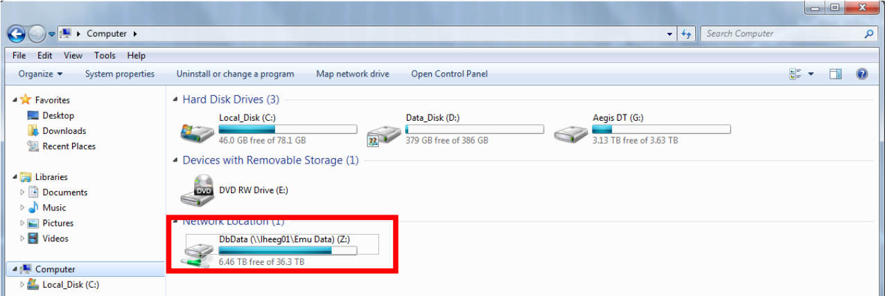
- NeuroWorks stores the raw data for every patient on a Network drive (see figure below). Most often the drive will be
Create study path text file¶
-
Navigate to the NeuroWorks data storage drive. Once in that directory you can now search for the subjects name (Lastname Firstname) in the search box at the top right of the File Explorer window. You can press the red X to stop the search if it seems to be going on forever. The search results up to that point will not be removed if you stop the search.
-
Sort the subjects folders by selecting Date Modified at the top. This will organize the subjects folders from newest to oldest.
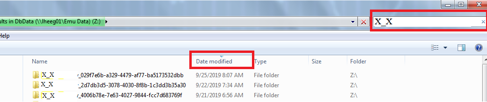
-
Right click on the computer desktop select New > Text Document. Rename the text document to match the subject you will be exporting.
-
Open the text document. Each line should be the full path the specific study you want to export for the subject. In the NeuroWorks patient directory folder, start at the oldest study folder by scrolling to the bottom. If multiple folders exist on the same day, hover the mouse over each folder to determine the size (iEEG data is typically ~20-25 gb in size).
-
Once you have determined the right directory, open the directory and find the .eeg file (usually at the top). If you right click on the search bar you can copy the directory path and paste it into the text file. Then copy the filename of the .eeg and add that to the text file as well to complete the path. You can also right click on the file select Properties and copy the full path from the window that opens.
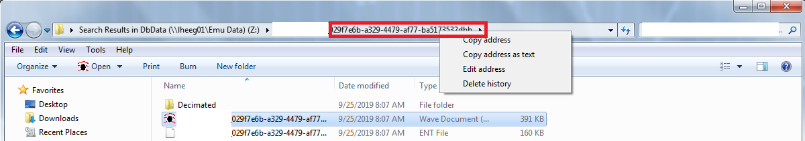
-
In the text document paste the full path to the .eeg file you just copied. You will then need to provide the full path to where the EDF Export Template is for this subject by adding it to the same line. Following the .eeg path, enter a comma and a space followed by the full path to the template:

-
Repeat steps 2-4 for all study dates for the subject.
-
Save the text document and close it.
Running batch export¶
-
Now it is time to run the batch conversion. Click on the Windows start menu and search for Command Prompt. Double click to open a command prompt window.
-
You will now enter the command to perform the conversion, using the information you have previously gathered.
-
Input 1: Type the full path to where you found the EDFExport.exe within quotations:
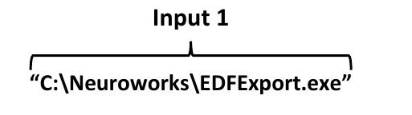
-
Input 2: Press the spacebar and type -f, followed by another space and the path to where the subject text document is located that you created. Put the path within quotations:
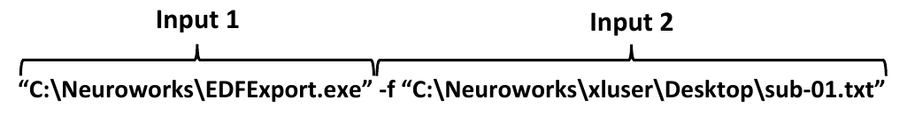
-
Lastly, you need to specify where you want the exported EDFs to go. Create a new folder on your encrypted hard drive for this export and copy the full path to that directory.
-
Input 3: In the command prompt, enter a space after the path for the text document then enter -o and another space followed by the full path to the output directory. Again, ensure you place the path within quotations:
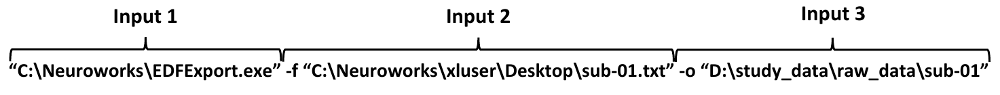
In the command prompt window, the function will look like:
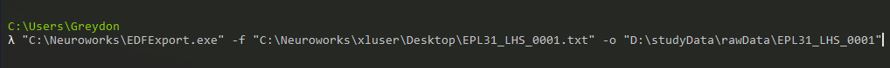
-
Once you have entered the full command hit the Enter key to begin conversion. For a 25gb file, the conversion will take ~15mins. Return in a few hours to check on the conversion